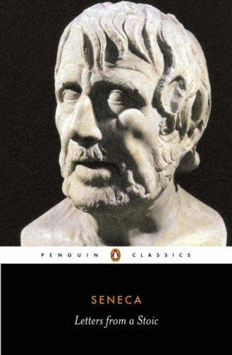

塞涅卡（Lucius Annaeus Seneca，约公元前4年—公元65年）是古罗马哲学家、悲剧作家与政治家，斯多葛学派的重要代表人物之一。他出生于西班牙科尔多瓦的一个显赫家族，青年时求学罗马，后进入政坛，历经卡利古拉与克劳狄皇帝时期的跌宕沉浮。公元49年他被召回罗马，担任年幼尼禄的导师，此后数年间以帝师兼辅臣的身份深度参与帝国政务。晚年渐遭疑忌，逐渐退出权力中心。公元65年，他被指控参与针对尼禄的阴谋，被迫服毒自尽。《斯多葛书简》（Epistulae Morales ad Lucilium，即《致卢基利乌斯的道德书信》）是塞涅卡在人生最后数年中写给友人卢基利乌斯的一百二十四封信的合集，写于他彻底退出政治生活之后，是其斯多葛哲学思想最为集中的表达，也是西方哲学史上最具个人色彩的散文之一。
全书以书信体呈现，每封信围绕一个哲学主题展开，涵盖死亡的坦然面对、时间的珍视、友谊的本质、财富与贫穷的辩证、愤怒与激情的克制、灵魂的自由等核心议题。塞涅卡的斯多葛主义并非抽象的逻辑推演，而是一种可操作的生活哲学。他反复强调：哲学的目的不是辩论，而是改造自我。时间是人唯一真正拥有的财富，而多数人却将其无意识地挥霍于他人的期待与欲望的追逐之中。他写道："把握每一天，使今天不依赖明天。"他对死亡的论述尤为动人——死亡并不是我们应当逃避的，而是我们应当学会直视、从而获得自由的东西。一个真正理解死亡必然性的人，才能从恐惧中解脱，真正活在当下。他也以极大的清醒谈论财富：物质的充裕既不等于灵魂的丰盈，也不等于其对立——关键在于内心是否真正独立于外部条件的起伏。
塞涅卡的书信在历史上持续引发共鸣。文艺复兴时期的蒙田大量引用他的文字，视之为思想的源泉。美国开国元勋、总统约翰·亚当斯（John Adams）晚年在给友人的信中写道，塞涅卡的书信是他案头常备的读物，"为一个人如何面对命运的变化提供了无可替代的指引"。《沉思录》的作者马可·奥勒留虽未直接引用塞涅卡，但两人在斯多葛传统中精神相通，共同构成了斯多葛学派个人修炼这一脉络的双峰。现代哲学作家瑞安·霍利迪（Ryan Holiday）在推广斯多葛主义的著作中多次将塞涅卡的书简列为入门必读，称其"比任何一本自我帮助类书籍都更诚实地面对人类困境的本质"。
对于商业与投资领域的读者，《斯多葛书简》的价值在于它提供了一套在不确定性与逆境中保持理性与从容的内心框架。市场的波动、企业的兴衰、职业的起落，都是塞涅卡所描述的命运变化的现代版本。他笔下那种对外部结果保持适度超然、同时全力做好自己能掌控之事的态度，与查理·芒格所强调的心理健康与长期理性决策高度契合。塞涅卡相信，真正的优势来自内心的稳定而非外部条件的顺遂——这一洞见对任何需要在压力下做出重要判断的人，都有持久的参考价值。